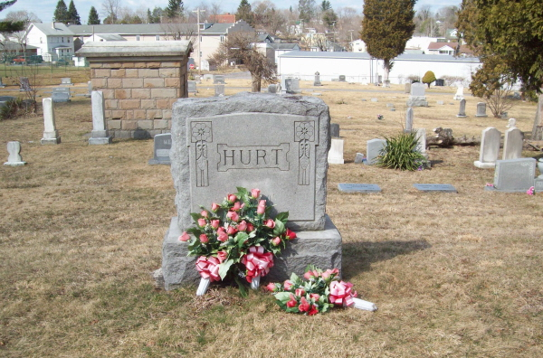

Hurt line · Beckley, Raleigh County, West Virginia
Profile status: DOCUMENTED
Quick Facts
Born
14 March 1879, Beckley, Raleigh County, West Virginia DOCUMENTED (West Virginia birth register, the 1880 census at age 1, his death certificate, and his gravestone all agree; an old compiled account's "March 4" and his World War I draft card's "1873" are refuted — see Research Notes.)
Died
24 November 1955, at noon, Raleigh General Hospital, Beckley, Raleigh County, West Virginia DOCUMENTED (West Virginia death certificate, State File No. 16096, read from the certificate image on his Find a Grave memorial: age 76; carpenter; widowed; informant Emmette J. Hurt; father and mother "Unknown"; cause ventricular fibrillation from arteriosclerotic heart disease and chronic congestive failure, with extreme malnutrition; burial Wildwood Cemetery, 26 November 1955)
Married
Edna Bailey, 14 June 1902, Raleigh County, West Virginia DOCUMENTED (marriage register, Marriages v. 2–3, Film 598432, Image 518, p. 419; record Id 11511827; the register names no parents for either spouse; the license day reads as both 12 and 14 June across notes — see Research Notes.)
Occupation
Brakeman (1910), then carpenter; employed by the Beckley Hardware Co. for 35 years, with earlier work at Langhorne and Rickets Construction Co. and Rose and Turner Furniture Co.; repair work by 1950; owned his home by 1930 SUPPORTED (census series and his obituaries; he never left Beckley)
Military
Registered for the World War I draft, 12 September 1918, at age 39 DOCUMENTED (card viewed 26 September 2026); no service record, pension, or veterans'-schedule entry has been found (registration is not service)
Buried
Wildwood Cemetery, Beckley, Raleigh County, West Virginia — 26 November 1955 DOCUMENTED (death certificate, State File No. 16096; funeral 2 p.m. that day at Calloway Heights Community Church)
James's father is unknown — his death certificate names no father, and no public record names him. His mother appears as "Nannie Hurt" in the 1880 census; her death certificate reads "Nannie E. Hurt." The "Estelle" in some family sources appears in no record and is not used here.
Spouse
Edna Bailey (31 August 1880–19 October 1926), married 14 June 1902 DOCUMENTED
Children
Waldo Emmett Hurt (born 20 September 1902; died 9 December 1904, age 2) SUPPORTED Laverne Hurt (born 17 October 1906; died 3 October 1986; married Dallas Cecil McKinney) DOCUMENTED Melba Hurt (born 6 June 1909; died January 1992; never married; teacher) DOCUMENTED James Roland ("Rowland") Hurt (born 22 November 1910; died June 1980; married Ruby Jane Kessinger) DOCUMENTED Annadine "Deany" Hurt Duncan (born 7 January 1913; died 19 May 1975; married Harry Andrew Duncan Jr.) SUPPORTED Unnamed male Hurt (born 1914; fate unknown) DOCUMENTED Emmett Jay Hurt (born 21 February 1923; died 28 January 1991; World War II Army veteran; teacher and principal) DOCUMENTED
Roster follows the family couple profile (7 children). Geni's Immediate Family grid links only five — Emmett Jay has no Geni profile, so he is carried unlinked; he is named as the sixth child in James's Geni About text and in Tricia's tree (as Emmette J, died 28 January 1991, Beckley). The 1914 unnamed son appears in the couple profile and the birth index only, not in the Nana story's six or on Geni. Waldo is graded SUPPORTED here: the couple profile grades him UNPROVED — his death row names a father "F. E. Hurt" and is filed unplaced — and his 20 September 1902 / 9 December 1904 dates come from the WikiTree entry; no West Virginia birth or death detail page has been opened. Geni titles the fourth child "Rowland Hurt" with only an estimated birth range; the couple profile and James's Geni About text call him James Roland ("Rowland", 1910–1980), and the folder's delayed birth certificate gives James Roland Hurt, born 22 November 1910. Melba's death day reads 15 January in one source and 16 January in the SSDI; James Roland's reads 5 June in one source and 1 June in the SSDI.
Siblings
Minnie Mae Hurt Smith (married Jackson Smith 1891; died 1927) DOCUMENTED Annice Irene Hurt (married Charles Henry Bailey 1893; died 1956) SUPPORTED Ira Jay Hurt (married Cora Alice Warden 1901; died 1954) SUPPORTED William W. Hurt (born about 1877; untraced after 1880) Olga B. Hurt (born May 1880; untraced after 1880)
All five are Nannie Hurt's children from her 1880 household, not James's children. Annice married Charles Henry Bailey, Edna's brother — a double sibling marriage (identification probable). Ira Jay's identification is strong; his 1954 death certificate was image-read. William W. and Olga B. appear only in the 1880 household and are untraced after 1880; one note raises that they may belong to Emma, the "cousin" in that household.
14 March 1879 · age 0 Born, Beckley, Raleigh County, West Virginia DOCUMENTED
14 June 1902 · age 23 Married Edna Bailey, Raleigh County, West Virginia DOCUMENTED
1902–1923 · ages 23–44 Seven children born: Waldo, Laverne, Melba, James Roland, Annadine, an unnamed son (1914), Emmett Jay SUPPORTED
12 September 1918 · age 39 Registered for the World War I draft; self-employed carpenter DOCUMENTED (registration is not service)
19 October 1926 · age 47 Edna died at Beckley; James widowed with children, the youngest not yet four SUPPORTED
24 November 1955 · age 76 Died, Beckley, Raleigh County, West Virginia DOCUMENTED
26 November 1955 Funeral at 2 p.m., Calloway Heights Community Church; buried at Wildwood Cemetery, Beckley DOCUMENTED (death certificate and obituaries)
Life Story
James Emmette Hurt was born on 14 March 1879 at Beckley, Raleigh County, West Virginia, the son of Nannie Hurt. His father is unknown — his own death certificate names no father, and no public record names him. He grew up in Beckley as the coal boom built the town around him: the railroad reached town in 1901, the population jumped from 342 in 1900 to 2,161 in 1910, and fifty mines were operating nearby by 1905. He never left Beckley.
He married Edna Bailey on 14 June 1902 in Raleigh County. He worked as a brakeman in 1910, then as a carpenter, with hardware and furniture work, and repair work by 1950; he owned his home by 1930. He registered for the World War I draft on 12 September 1918; no military service has been found. James and Edna had seven children. Edna died on 19 October 1926, leaving James a widower with children, the youngest not yet four; their daughter Melba raised the youngest, Emmett, after Edna's death.
He lived on in Beckley through the Depression and the Second World War — sixty-two when Pearl Harbor was bombed — and died at noon on Thursday, 24 November 1955, at Raleigh General Hospital, aged seventy-six, after a lengthy illness. He had worked for the Beckley Hardware Co. for thirty-five years, and was a member of the Beckley First Christian Church. His funeral was held at 2 p.m. on Saturday, 26 November 1955, at Calloway Heights Community Church, and he was buried at Wildwood Cemetery in Beckley. No portrait of James has been found; the photograph above is his own flat marker at Wildwood Cemetery (1879–1955), and the gallery below shows the Hurt family monument at the same cemetery.
Photo Gallery

The Hurt family monument at Wildwood Cemetery, Beckley, where he is buried
Sources and Evidence
West Virginia birth register, the 1880 census (age 1), his death certificate, and his gravestone: born 14 March 1879, Beckley DOCUMENTED (an old compiled account's "March 4" and his draft card's "1873" are refuted)
West Virginia death certificate, State File No. 16096 (read from the certificate image on his Find a Grave memorial): James Emmette Hurt, died 24 November 1955, noon, Raleigh General Hospital, Beckley; born 14 March 1879, Beckley; age 76; carpenter (hardware store); widowed; residence Rural Acres Drive, Beckley; father "Unknown," mother "Unknown"; informant Emmette J. Hurt; cause ventricular fibrillation, 10–15 minutes, from arteriosclerotic heart disease, 1–2 years, and chronic congestive failure, with extreme malnutrition, 6–8 months; burial Wildwood, 26 November 1955 DOCUMENTED
West Virginia marriage register, Marriages v. 2–3, Film 598432, Image 518, p. 419; record Id 11511827: married 14 June 1902, Raleigh County; the register names no parents for either spouse DOCUMENTED
World War I draft registration card, viewed 26 September 2026: registered 12 September 1918, age 39 DOCUMENTED (registration is not service)
Census series: brakeman (1910); self-employed carpenter (1918); widowed hardware laborer (1930); furniture carpenter (1940); repair man/clerk (1950); owned his home by 1930; never left Beckley SUPPORTED
Geni profiles, click-verified 4 November 2026: mother Nannie Hurt; siblings Minnie, Annice, and Ira; children Waldo, LaVerne, Rowland, Melba, and Annadean; spouse Edna SUPPORTED (About text: father unknown; children "all 6 attached" including Emmett Jay, but the grid links only five)
Three obituaries, all published about 25 November 1955 (Find a Grave memorial 31829692, photograph of the clippings, pulled in full from the memorial on 5 November 2026): Charleston Gazette ("James E. Hurt Dies in Raleigh"), Beckley Post-Herald ("James E. Hurt Rites Tomorrow"), and Raleigh Register ("Hurt Funeral Slated Saturday"). All three agree: James Emmette Hurt, 76, of Rural Acres Drive, Beckley, died at noon Thursday in Raleigh General Hospital after a lengthy illness; a pioneer of Beckley, born there 14 March 1879; married to Edna Bailey, who preceded him in death in 1926; member of the Beckley First Christian Church; first work with Langhorne and Rickets Construction Co., then Rose and Turner Furniture Co. and Funeral Home, then the Beckley Hardware Co. for 35 years; funeral 2 p.m. Saturday at Calloway Heights Community Church, burial in Wildwood Cemetery. Survivors named: one sister, Mrs. Anise Bailey of Beckley; three daughters, Mrs. D. C. McKinney of Cincinnati, Miss Melba Hurt at home, and Mrs. H. A. Duncan Jr. of Oak Hill; two sons, Roland Hurt of Logan and Emmette J. Hurt at home; five grandchildren and five great-grandchildren. "Mrs. D. C. McKinney" is Laverne, wife of Dallas Cecil McKinney; "Mrs. Anise Bailey" is read as Annice Irene Hurt Bailey, his sister, married to Edna's brother Charles Henry — the newspaper's spelling. The memorial's caption dates the clippings "Friday, 5 November 1955," which is a misreading of 25 November 1955 DOCUMENTED
Find a Grave memorial 31829692, James Emmette Hurt: the memorial's photographs — his flat marker (1879–1955), the Hurt family monument, his death certificate, and the three obituaries — are all his, and the memorial is verified as his. Its header dates (24 September 1874 – 1 November 1955) and its burial place (Sunset Memorial Park, South Charleston) are wrong, refuted by the death certificate, the marker, and the obituaries, and are not adopted here DOCUMENTED
Tricia's Ancestry tree: James Emmet (one t) born 14 March 1879, Raleigh, died 24 November 1955, Beckley; mother Nancy Estelle Hurt; father Unknown; marriage 1902, year only SUPPORTED (the tree's "Emmet" is the marriage-register clerk variant; "Emmette" is used here)
Delayed birth certificates: Melba Hurt, 6 June 1909; James Roland Hurt, 22 November 1910 DOCUMENTED
West Virginia birth index Id 2213511: unnamed male Hurt, born 1914, Raleigh, parents James Emmett Hurt and Edna Bailey Hurt DOCUMENTED
SSDI, Find a Grave memorial 126567123, and his obituary: Emmett Jay Hurt, born 21 February 1923, died 28 January 1991, Beckley; World War II Army veteran; teacher and principal 1948–1985; obituary names his parents James Emmette and Edna Bailey Hurt and his sisters Anna Dean Duncan and Laverne McKinney DOCUMENTED
Grades: DOCUMENTED an original record says it · SUPPORTED several records point to it · FAMILY ACCOUNT the family's own telling · UNPROVED a lead, not proved.
Research Notes and Open Questions
Father unknown: a settled brick wall at about 90%. No public record names him. The 1902 marriage register has no parent fields at all (license-book format), so that route is closed permanently. The "Ira Dickerson Hurt" shown as his father on some trees is an uncorroborated tree invention, later graded contradicted — a separate family elsewhere.
Mother: "Nannie Hurt" in the 1880 census; her death certificate reads "Nannie E. Hurt." "Nancy" is the formal form; "Estelle" appears in no record and is not used. Her birth is three-way conflicted: about 1843–44 (1880 census, age 36), 19 October 1837 (1929 death certificate, age 91 years 8 months 22 days), and 19 October 1838 (headstone reading). Her death certificate, with James himself as informant, names her father as Roland Hurt — the Roland to Nannie link is probable, not proved; her mother is not named on the certificate. Her 1880 marital status reads "single" in the transcript against an image reading of "widow" — open. She is a ghost in 1870, not found in Raleigh, Fayette, Wyoming, Mercer, or Summers counties.
Nannie's parents: Roland Hurt and Elizabeth Lawson as her parents sit at 55–60% and are not carried.
Roland and Moses: a separate line, unchanged without an explicit ruling. The November 1830 Patrick County power of attorney names Rowland Hurt as attorney for Moses Hurt's heirs, not as a signer or heir (90–95% not Moses's son on the deed's face), against compiled family histories naming him Moses's son. The standing note keeps him attached as Moses's son, and detachment needs an explicit ruling; the generation roster is unchanged. Roland is not attached here as James's father or grandfather.
Geni first load: a first load of James's Geni profile in the same session showed born 20 May 1879 and died 4 January 1955; the re-checked live profile, a revision by Rick, and the West Virginia Deaths record all give 14 March 1879 and 24 November 1955, which is what this page uses.
Spelling: "James Emmette Hurt" is used here, the dominant form across every record type. The 1902 marriage register image reads "James Emmet" (single t, clerk's hand). No record shows James's own signature spelling.
Find a Grave: memorial 31829692 is verified as his — its photographs (his flat marker, the Hurt family monument, his death certificate, and the three obituaries) were pulled in full from the memorial on 5 November 2026 and read here. Its header dates (24 September 1874 – 1 November 1955) and its burial place (Sunset Memorial Park, South Charleston) are wrong, refuted by the death certificate, the marker, and the obituaries, and are not adopted; the memorial's own photographs prove the man. The tile above is shown now that the memorial is verified.
MyHeritage: a profile was verified live 21 October 2026 but its URL was not filed, so no tile is shown.
Frederick Arnold Hurt (died 1971, father "J. E./Hurt," mother "Hettie") is not James Emmette's son — probably the son of J. C. Hurt and Hettie Wilburn (married 6 July 1903).
Lore not carried: Pocahontas's-sister lore (about 5%, unbacked) and free-person-of-color lore (about 10–15%, unbacked) are not on this page; the "Jane Kincaid full-blooded Cherokee" attribution is contradicted (a separate North Carolina/Georgia Kincaid branch).
Obituaries: three were recovered from his Find a Grave memorial on 5 November 2026 (Charleston Gazette, Beckley Post-Herald, Raleigh Register, all about 25 November 1955) and are cited above. They name all five living children — Mrs. D. C. McKinney (Laverne, wife of Dallas Cecil McKinney, of Cincinnati), Miss Melba Hurt, Mrs. H. A. Duncan Jr. (Annadine), Roland Hurt of Logan, and Emmette J. Hurt — and one sister, "Mrs. Anise Bailey," read as Annice Irene Hurt Bailey, his sister, married to Edna's brother Charles Henry. The obituaries spell his son "Roland," where Geni spells him "Rowland"; the folder carries Rowland. The memorial's caption dates the clippings "Friday, 5 November 1955," a misreading of 25 November 1955 (the Friday after his death).
No portrait of James has been found. His own flat marker at Wildwood Cemetery (1879–1955) is placed above as the profile picture, pulled in full from his Find a Grave memorial on 5 November 2026, and the Hurt family monument at the same cemetery is in the gallery below (the monument photograph already served the page; the 2014 memorial photograph of it is the same file). His death certificate and three obituaries are filed in the couple folder and cited above, not shown as gallery figures. Place photographs in the folder (Marsh Fork High School) are not shown on this page.
WikiTree was in temporary read-only mode in October 2026 — James's parents are not linked there and the marriage field carries month and year only; both fixes are queued for when editing returns.
Profile history: Created 4 November 2026 from the family couple profile and research notes.
Type your fixes, stories, records, or photos in our shared doc for this generation, under this person's name. We'll update the profile as soon as we can.